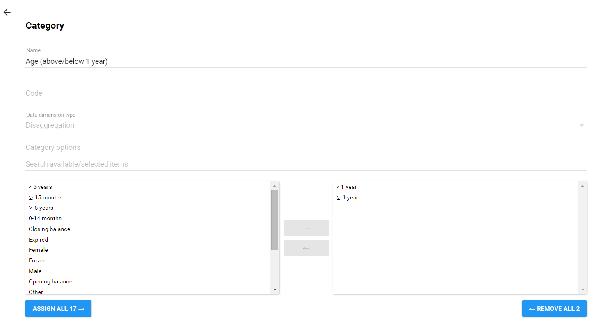

Use data element categories to disaggregate data elements into individual atomic components. You can also use categories to assign attributes to all data recorded in a specific dataset, such as "Implementing partner" and "Funding agency."
Data element categories are typically a concept, for example Gender, Age or Disease Status. Data elements such as "Number of cases of confirmed malaria" are often broken into smaller component parts to determine, for example, the number of confirmed malaria cases of particular age groups.
Example 5.1. Three data element categories
Create three data element categories: Under 1, 1-5 and Over 5. Assign them as categories to the data element. This creates three spearate fields for this data in the data entry screens:
Number of confirmed malaria cases (Under 1)
Number of confirmed malaria cases (1-5)
Number of confirmed malaria cases (Over 5)
Effective use of data element categories greatly simplifies the process of setting up the DHIS 2 system, as the data element categories can be reused to disaggregate many different data elements. Otherwise, each of the data elements listed above, would need to be created separately. Judicious use of data element categories will greatly simplify the DHIS 2 implementation, and allow for subsequent advanced analysis.
When possible, recycle category options. For instance, there might be two categories which might share a particular category option (for example <1 year of age). When creating the categories, this category option could be reused. This is important if particular category options (or category option combinations) need to be analyzed together.
All possible category options should be defined.
Categories should be composed of multiple category options created in Step 1.
Category combinations should be composed of either one, or multiple categories.
Data elements should be created and assigned a particular category combination.
A category option consists of a name, along with an optional code, and a concept.
To create a category:
Create the category options you need.
Click Apps > Maintenance > Data Elements > Category.
Click the yellow plus button.
Fill in the form:
Name
Code
Data dimension type
A category can have two types "Disaggregation" or "Attribute". For disaggregation of data elements, you should select "Disaggregation". A dimension type of "Attribute" will allow the category to be used to assign a combination of categories to data recorded through a dataset.
Data dimension
If you select Data dimension, the category will be available to the analytics as another dimension, in addition to the standard dimensions of "Period" and "Organisation unit".
Select category options and assign them.
Click Save.
Once all category options have been defined for a particular category, the category can be defined with the "Data Element Category Management" dialog. Add a new data element category by clicking on the "+" icon. You can also edit existing categories by right-clicking and selecting edit from the contextual menu.
|  |
Type the name of the new data element category in the "Name" field. Category options can be added by moving category options from the left-side pane (Available category options) into the right-side pane(Selected category options). Once all data element categories options have been added to the data element category, press the button to save all changes or the button to discard any changes.